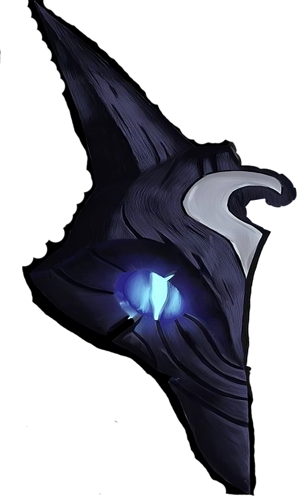
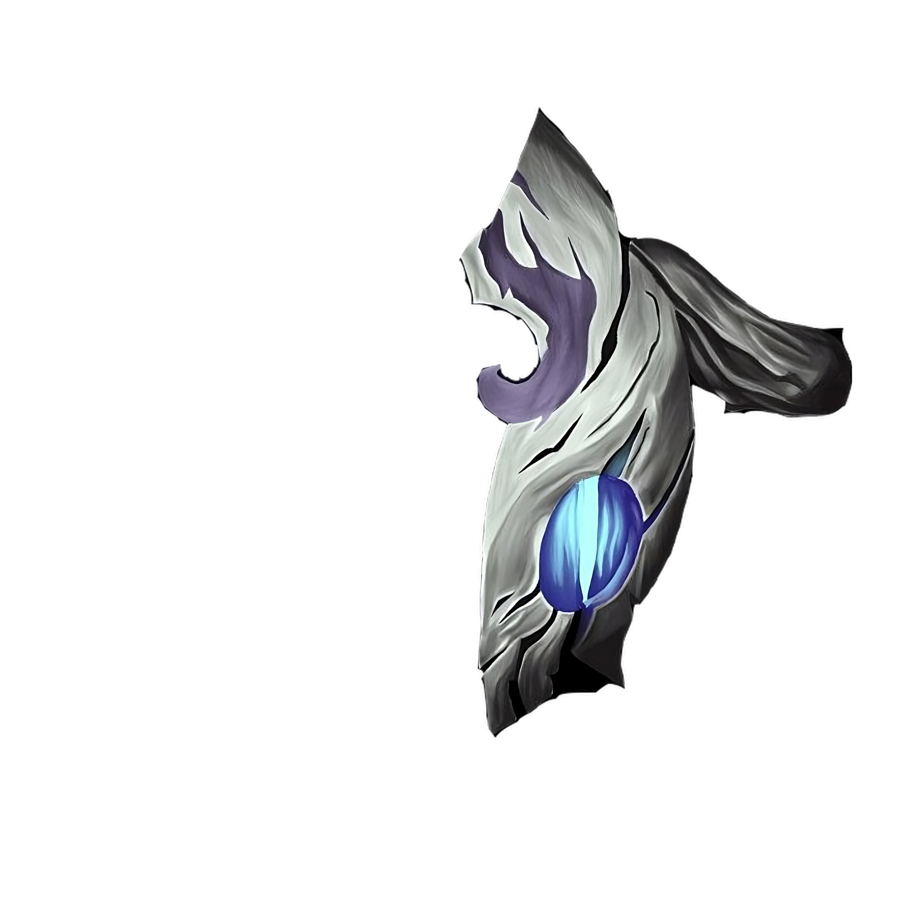
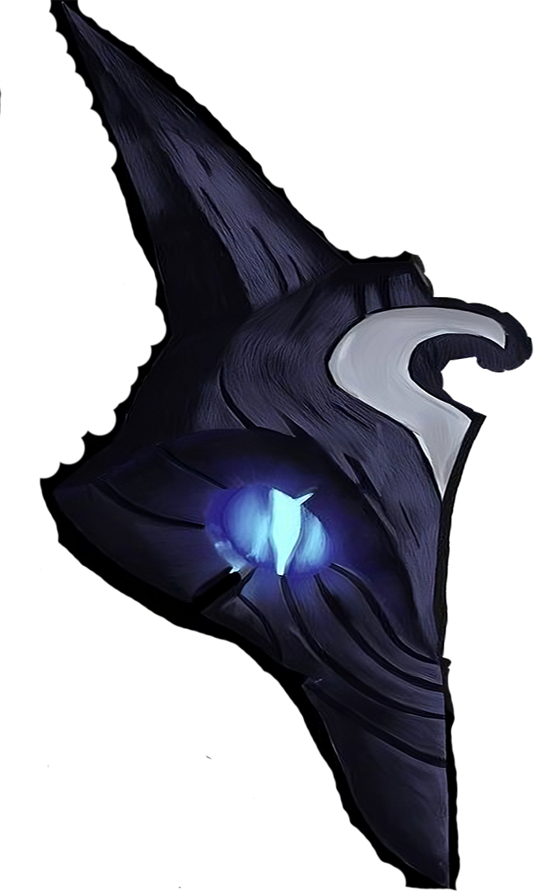
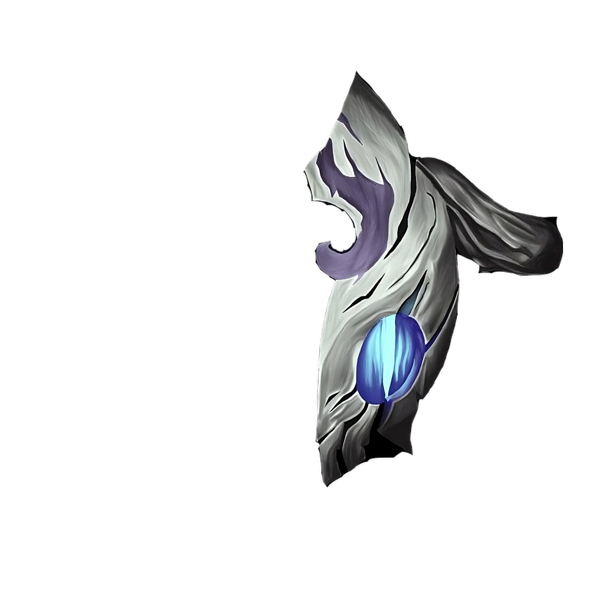

- Ovelha, conte uma história.
- Houve outrora, um homem pálido com cabelos negros que estava muito sozinho.
- Porque estava sozinho?
- Tudo que existe precisava encontrar esse homem, então, afastaram-se dele.
- Ele perseguiu tudo?
- Ele dividiu-se em dois, com um machado, bem, ao meio.
- Para que ele sempre tivesse um amigo?
- Para que ele sempre tivesse um amigo.
A máscara da Ovelha representa a morte pacífica, a passagem tranquila para a vida após a morte. Ela é geralmente retratada como uma máscara branca, suave e delicada, com traços que lembram um rosto humano, mas com olhos vazios e sem expressão.
Já a máscara do lobo representa uma morte violenta, brutal e súbita. Ela é geralmente retratada como uma máscara escura, selvagem e agressiva, com traços que lembram um rosto de lobo ou outra criatura feroz.
Distintos, mas nunca separados, os Kindred representam as essências gêmeas da morte. O arco da
Ovelha oferece um desprendimento rápido do mundo mortal para aqueles que aceitam seu destino. O Lobo
caça aqueles que fogem de seu fim, entregando-lhes a violência derradeira de suas presas
esmagadoras. Embora interpretações diferentes da natureza dos Kindred variem por toda Runeterra,
todo mortal deve escolher a verdadeira face de sua morte.
Os Kindred são o envolvimento branco do nada e a perfuraçãao dos dentes no escuro. Criador e
Destruidor, poeta e primitivo; são um e são ambos. Quando pegos no limite da vida, soando mais alto
do que o som de qualquer trombeta, está a pulsação martelante das gargantas que chama os Kindred à
sua caça. Levante-se e cumprimente o arco prateado da Ovelha para que suas flechas lhe derrubem
rapidamente. Caso a recuse, o Lobo fará de você sua alegre caça, em que cada perseguição leva ao fim
brutal.
Os Kindred existem em Valoran desde que as pessoas reconhecem a morte. Quando chega a hora final,
dizem que um demaciano de verdade ficará de frente para a Ovelha, recebendo a flecha, enquanto o
Lobo lidera a caçada pelas ruas de Noxus. Nas neves de Freljord, antes ir à luta, algumas tribos
"beijam o Lobo", honrando sua caçada com o sangue dos inimigos. Após cada Tormento, a cidade das
Águas de Sentina se junta para celebrar os sobreviventes e honrar aqueles que receberam a verdadeira
morte da Ovelha e do Lobo.
Negar os Kindred é o mesmo que negar a ordem natural das coisas. Foram poucos os capazes de iludir
esses caçadores. Essa fuga perversa não é um santuário, pois nela existe apenas um pesadelo
ambulante. Os Kindred aguardam aqueles presos às Ilhas das Sombras, pois sabem que tudo
eventualmente sucumbirá às flechas da Ovelha ou aos dentes do Lobo.
A aparição mais antiga dos caçadores eternos vem de um par de máscaras antigas, feitas por mãos
desconhecidas nos túmulos de pessoas há muito tempo esquecidas. Contudo, até hoje, a Ovelha e o Lobo
permanecem juntos, e sempre serão os Kindred.
Fim
 


